감정평가사-1차-2교시 (2012-07-01 기출문제)
1과목: 감정평가관계법규
1. 재무보고를 위한 개념체계의 '유용한 재무정보의 질적 특성'에 관한 설명으로 옳지 않은 것은?
- 보강적 질적 특성은 정보가 목적적합하지 않거나 충실하게 표현되지 않으면, 개별적으로든 집단적으로든 그 정보를 유용하게 할 수 없다.
- 재무정보가 예측가치를 갖기 위해서 그 자체가 예측치 또는 예상치일 필요는 없다.
- 보강적 질적 특성을 적용하는 것은 어떤 규정된 순서를 따르지 않는 반복적인 과정으로, 때로는 하나의 보강적 질적 특성이 다른 질적 특성의 극대화를 위해 감소되어야 할 수도 있다.
- 중요성은 개별 기업 재무보고서 관점에서 해당 정보와 관련된 항목의 성격이나 규모 또는 이 둘 모두에 근거하여 해당 기업에 특유한 측면의 목적적합성을 의미한다.
- 보강적 질적 특성에는 비교가능성, 검증가능성, 적시성 및 충실한 표현이 있다.
(정답률: 알수없음)

2. 유형자산의 취득원가에 포함되지 않는 것은?
- 유형자산과 관련된 산출물에 대한 수요가 형성되는 과정에서 발생하는 가동손실과 같은 초기 가동손실
- 설치장소 준비 원가
- 유형자산이 정상적으로 작동되는지 여부를 시험하는 과정에서 발생하는 원가
- 최초의 운송 및 취급관련 원가
- 설치원가 및 조립원가
(정답률: 알수없음)
3. (주)강남은 (주)대한으로부터 공정가치 ￦6,500,000의 기계장치를 리스하였다. 리스기간은 20×1년 초부터 20×4년 말까지 4년이고, 리스료는 매년 말 ￦2,000,000씩 후급하기로 하였으며, 추정 잔존가치 ￦120,000 중 ￦100,000을 (주)강남이 보증하기로 하였다. 이 리스는 금융리스에 해당되고, 내재이자율은 10%이며, 동 리스자산은 정액법으로 감가상각한다. (주)강남이 리스와 관련하여 20×1년에 계상할 총비용은? (단, 기간말 단일금액의 현가계수(4기간, 10%)는 0.6830, 정상연금의 현가계수(4기간, 10%)는 3.1670이다.)
- ￦1,570,325
- ￦1,575,575
- ￦1,975,000
- ￦2,000,000
- ￦2,215,8⑤
(정답률: 알수없음)
4. 다음 자료를 이용하여 계산한 기말매입채무 잔액은? (단, 매입은 모두 외상으로 한다.)
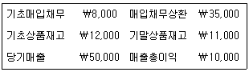
- ￦11,000
- ￦12,000
- ￦13,000
- ￦14,000
- ￦15,000
(정답률: 알수없음)
5. (주)대한은 20×1년 초 총계약금액이 ￦600,000인 교량 신축공사를 수주하였다. 공사기간은 20×1년 초부터 3년이며, 20×1년에 이 교량의 총계약원가는 ￦500,000으로 추정되었으나 완공 후 실제 총 원가는 ￦540,000이 소요되었다. 다음 자료를 이용하여 (주)대한이 진행기준에 따라 인식할 20×2년 계약이익은?
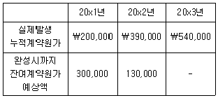
- ￦10,000
- ￦20,000
- ￦30,000
- ￦40,000
- ￦50,000
(정답률: 알수없음)
6. (주)한국은 20×1년 12월 31일에 3개의 사업부 중 사업부 A를 매각하기로 결정하였다. (주)한국과 사업부 A의 20×1년 12월 31일 자산과 부채의 장부금액 및 20×1년의 수익과 비용 발생금액은 다음과 같다. 사업부 A의 자산은 모두 비유동자산으로 순공정가치가 ￦1,800이며, 부채의 순공정가치는 장부금액과 동일하다.
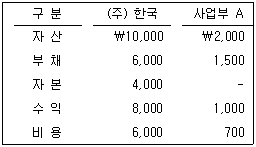
(주)한국의 20×1년 포괄손익계산서에 표시될 계속 영업손익과 중단영업손익은?
- 계속영업이익 ￦2,000 중단영업이익 ￦100
- 계속영업이익 ￦1,700 중단영업이익 ￦100
- 계속영업이익 ￦1,800 중단영업이익 ￦100
- 계속영업이익 ￦1,700 중단영업이익 ￦300
- 계속영업이익 ￦2,000 중단영업이익 ￦300
(정답률: 알수없음)
7. (주)강남은 사옥을 건설하기 위하여 20×2년 1월 1일에 (주)대한과 건설계약을 체결하였다. (주)강남의 사옥은 20×3년 6월 30일에 준공될 예정이고, (주)강남은 사옥건설을 위해 다음과 같이 지출하였다.
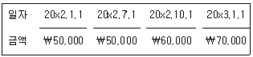
(주)강남의 차입금은 다음과 같다.
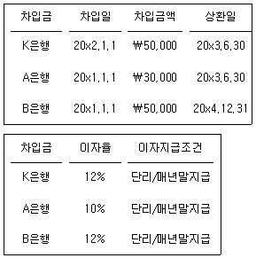
이들 차입금 중 K은행에서의 차입금은 (주)강남의 사옥건설을 위한 특정차입금이며, A은행 차입금과 B은행 차입금은 일반차입금이다. (주)강남의 건설 중인 사옥은 차입원가 자본화의 적격자산에 해당된다. 이에 대하여 (주)강남이 20×2년 자본화할 차입원가의 금액은?
- ￦4,500
- ￦6,000
- ￦9,000
- ￦10,500
- ￦13,500
(정답률: 알수없음)
8. 유형자산의 감가상각에 관한 설명으로 옳지 않은 것은?
- 유형자산을 구성하는 일부의 원가가 당해 유형자산의 전체원가에 비교하여 유의적이라면, 해당 유형자산을 감가상각할 때 그 부분은 별도로 구분하여 감가상각한다.
- 유형자산의 전체원가에 비교하여 해당 원가가 유의적이지 않은 부분도 별도로 분리하여 감가상각할 수 있다.
- 각 기간의 감가상각액은 다른 자산의 장부금액에 포함되는 경우가 아니라면 당기손익으로 인식한다.
- 유형자산의 잔존가치와 내용연수는 적어도 매 회계연도말에 재검토한다.
- 감가상각방법은 해당 자산의 공정가치 감소형태에 따라 선택한다.
(정답률: 알수없음)
9. (주)서울은 사옥을 건설하기 위하여 토지를 구입한 후 토지 위에 있던 건물을 철거하면서 철거비용 ￦150,000을 지불하였으며, 철거할 때 나온 철근을 ￦19,000에 매각하였다. (주)서울은 공유도로로부터 사옥까지 도로공사비 ￦80,000, 신축건물의 설계비 ￦100,000, 신축건물 건설을 위한 측량비 ￦45,000, 신축건물 건설공사비 ￦450,000, 신축건물 완성 후 조경공사비 ￦270,000을 지불하였다. 이 경우 건물의 취득원가는?
- ￦595,000
- ￦726,000
- ￦745,000
- ￦806,000
- ￦825,000
(정답률: 알수없음)
10. 회계변경과 오류수정에 관한 설명으로 옳지 않은 것은?
- 기업은 회계정책의 변경을 반영한 재무제표가 거래, 기타 사건 또는 상황이 재무상태, 재무성과 또는 현금흐름에 미치는 영향에 대하여 신뢰성 있고 더 목적적합한 정보를 제공하는 경우 회계정책을 변경할 수 있다.
- 특정 범주별로 서로 다른 회계정책을 적용하도록 규정하거나 허용하는 경우를 제외하고는 유사한 거래, 기타 사건 및 상황에는 동일한 회계정책을 선택하여 일관성 있게 적용한다.
- 과거에 발생한 거래와 실질이 다른 거래에 대하여 다른 회계정책을 적용하는 경우는 회계정책의 변경에 해당하지 않는다.
- 당기 기초시점에 과거기간 전체에 대한 새로운 회계정책 적용의 누적효과를 실무적으로 결정할 수 없는 경우, 실무적으로 적용할 수 있는 가장 이른 날부터 새로운 회계정책을 소급적용하여 비교정보를 재작성한다.
- 전기오류는 특정기간에 미치는 오류의 영향이나 오류의 누적효과를 실무적으로 결정할 수 없는 경우를 제외하고는 소급재작성에 의하여 수정한다.
(정답률: 알수없음)
11. 다음은 20×1년 (주)서울의 기초와 기말 재무상태에 관한 자료이다.
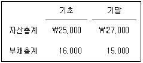
당기 중에 배당으로 현금 ￦400의 지급과 주식교부(금액 ￦100)가 있었고, 유형자산재평가이익 ￦100이 발생하였다면 20×1년 당기순이익은?
- ￦3,000
- ￦3,200
- ￦3,300
- ￦3,400
- ￦3,500
(정답률: 알수없음)
12. (주)남부는 20×1년 1월 1일 설비자산을 ￦2,000,000에 취득하면서 구입자금의 일부인 ￦600,000을 정부로부터 보조받았다. 설비자산의 내용연수는 5년, 잔존가치는 없으며, 감가상각방법은 정액법으로 한다. 정부보조금에 부수되는 조건은 이미 충족되었고 상환의무는 없다. (주)남부가 정부보조금을 이연수익으로 처리하는 경우 20×3년 12월 31일 재무상태표에 보고할 정부보조금과 관련된 이연수익은?
- ￦120,000
- ￦220,000
- ￦240,000
- ￦360,000
- ￦440,000
(정답률: 알수없음)
13. 다음 자료를 이용하여 계산한 현금및현금성자산은?
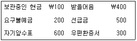
- ￦100
- ￦300
- ￦700
- ￦900
- ￦1,200
(정답률: 알수없음)
14. 다음 자료를 이용하여 계산한 (주)한국의 20×1년 매출액순이익률은?
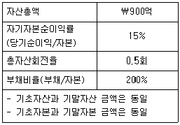
- 2%
- 4%
- 6%
- 8%
- 10%
(정답률: 알수없음)
15. (주)서울은 20×1년 12월 1일에 창고의 화재로 인하여 재고자산 전부와 회계장부의 일부가 소실되었다. 기초재고자산 ￦360,000, 당기순매입액 ￦900,000, 당기순매출액 ￦1,200,000이고, 과거 3년간 평균매출총이익률이 30%라면 화재 직전 창고에 남아 있었던 재고자산은?
- ￦370,000
- ￦378,000
- ￦420,000
- ￦470,000
- ￦490,000
(정답률: 알수없음)
16. (주)한국은 매년 말 모든 자산에 대하여 손상검사를 실시하고 있으며, 20×1년 말 실시한 손상검사로 영업권 손상차손 ￦5,000, 토지 손상차손 ￦20,000, 기계장치 손상차손 ￦20,000이 발생하였다. 20×1년 초 토지에 대한 재평가잉여금이 ￦30,000일 때, 손상차손 회계처리가 20×1년 포괄손익계산서의 당기순이익과 총포괄이익에 미치는 영향은?
- 당기순이익 ￦ 5,000감소, 총포괄이익 ￦ 5,000감소
- 당기순이익 ￦25,000감소, 총포괄이익 ￦20,000감소
- 당기순이익 ￦25,000감소, 총포괄이익 ￦45,000감소
- 당기순이익 ￦45,000감소, 총포괄이익 ￦25,000감소
- 당기순이익 ￦45,000감소, 총포괄이익 ￦45,000감소
(정답률: 알수없음)
17. 충당부채, 우발부채 및 우발자산에 관한 설명으로 옳지 않은 것은?
- 소송이 진행중인 경우는 보고기간 말에 현재의무가 존재하지 아니할 가능성이 높더라도 경제적 효익이 내재된 자원의 유출가능성이 아주 낮지 않는 한 충당부채로 공시한다.
- 우발부채는 경제적 효익이 내재된 자원의 유출을 초래할 현재의무가 있는지의 여부가 아직 확인되지 아니한 잠재적 의무이다.
- 충당부채는 현재의무이고 이를 이행하기 위하여 경제적 효익이 내재된 자원이 유출될 가능성이 높고 당해 금액을 신뢰성 있게 추정할 수 있으므로 부채로 인식한다.
- 충당부채로 인식하는 금액은 현재의무를 보고기간 말에 이행하기 위하여 소요되는 지출에 대한 최선의 추정치이어야 한다.
- 미래에 전혀 실현되지 아니할 수도 있는 수익을 인식하는 결과를 초래할 수 있기 때문에 우발자산은 재무제표에 인식하지 아니한다.
(정답률: 알수없음)
18. (주)서울은 20×1년 중에 ￦10,100을 지급하고 지분상품을 취득하였는데, 지급액 중 ￦100은 매매수수료이다. 20×1년 말 현재 지분상품의 공정가치는 ￦11,000이며, (주)서울은 20×2년 초에 지분상품 전체를 ￦11,200에 처분하였다. (주)서울이 이 지분상품을 단기매매금융자산으로 인식할 경우, 이에 대한 회계처리가 20×1년과 20×2년 당기순이익에 미치는 영향은?
- 20×1년 ￦100 감소, 20×2년 ￦1,200 증가
- 20×1년 ￦900 증가, 20×2년 ￦200 증가
- 20×1년 ￦900 증가, 20×2년 ￦900 증가
- 20×1년 ￦1,000 증가, 20×2년 ￦200 증가
- 20×1년 ￦1,000 증가, 20×2년 ￦1,200 증가
(정답률: 알수없음)
19. (주)서울은 20×1년 1월 1일 ￦1,000,000에 기계장치를 취득하여 사용하기 시작하였다. 기계장치의 내용연수는 5년이고 잔존가치 없이 정액법으로 상각하며 원가모형을 적용한다. (주)서울은 20×2년부터 기계장치에 대해서 재평가모형을 최초 적용하기로 하였다. 또한 내용연수를 재검토한 결과 당초 내용연수를 5년이 아니라 6년으로 재추정하였다. 20×2년 12월 31일 기계장치의 공정가치는 ￦700,000이다. (주)서울이 20×2년에 인식할 기계장치의 감가상각비와 20×2년 12월 31일 재평가잉여금의 잔액은?
- 감가상각비 ￦133,333 재평가잉여금 ￦33,333
- 감가상각비 ￦133,333 재평가잉여금 ￦0
- 감가상각비 ￦166,667 재평가잉여금 ￦66,667
- 감가상각비 ￦160,000 재평가잉여금 ￦60,000
- 감가상각비 ￦160,000 재평가잉여금 ￦0
(정답률: 알수없음)
20. 무형자산에 관한 설명으로 옳지 않은 것은?
- 무형자산은 물리적 실체는 없지만 식별가능한 비화폐성자산을 말하며, 식별가능성은 자산의 분리가능성 여부와 계약상 또는 법적 권리여부에 의해 판단할 수 있다.
- 무형자산으로 분류되기 위해서는, 식별가능해야 하고, 통제하고 있어야 하며, 그로부터 미래경제적 효익이 창출되어야 한다.
- 광물자원과 관련된 지출은 해당자산이 기술적 실현가능성과 상업화가능성이 있다고 판단되어 개발활동을 시작하면 이 단계부터의 지출을 탐사평가자산이 아닌 개발비로 인식한다.
- 무형자산이 한정할 수 없는 기간동안 순현금유입을 창출할 수 있을 것으로 기대된다면 그 무형자산은 비한정내용연수를 가지며, 상각하지 아니한다.
- 무형자산의 공정가치는 합리적인 공정가치측정치의 범위의 편차가 자산가치에 비하여 유의적일 때 신뢰성 있게 측정할 수 있다.
(정답률: 알수없음)
21. (주)한국은 20×6년 초 (주)서울을 매수하기로 하였다. 다음 자료를 이용하여 초과이익을 고려한 (주)한국의 (주)서울에 대한 매수금액은?
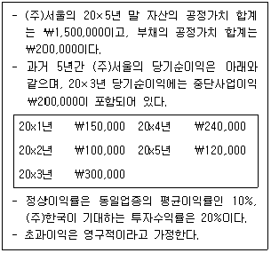
- ￦710,000
- ￦1,100,000
- ￦1,148,000
- ￦1,360,000
- ￦1,560,000
(정답률: 알수없음)
22. (주)한국은 제품 판매를 촉진하기 위하여 제품을 구입하는 고객에게 판매액 ￦1,000마다 1장씩의 경품권을 교부하고 있으며, 경품권 1장과 현금 ￦100을 가져오는 고객에게 경품용 제품 1개를 제공하고 있다. (주)한국은 경품용 제품을 개당 ￦300에 구입하였으며, 교부한 경품권 중 60%가 회수될 것으로 추정하고 있다. 경품과 관련된 다음 자료를 이용하여 계산한 (주)한국의 20×2년 말 경품부채 잔액은?
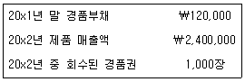
- ￦108,000
- ￦160,000
- ￦208,000
- ￦288,000
- ￦408,000
(정답률: 알수없음)
23. 20×1년 1월 1일에 (주)한국은 20×1년 12월 31일부터 매년 말 ￦100,000씩 3년간 수취하는 조건으로 상품을 할부판매하였다. 이 상품의 현금판매가격은 ￦257,710으로 취득 당시의 유효이자율 8%를 반영하여 결정된 것이다. 유효이자율법을 적용하여 회계처리하는 경우, 20×1년 12월 31일 판매대금 ￦100,000을 회수할 때 인식하여야 하는 이자수익은? (단, 계산금액은 소수점 첫째자리에서 반올림한다.)
- ￦8,000
- ￦16,000
- ￦20,617
- ￦22,266
- ￦24,000
(정답률: 알수없음)
24. (주)한국은 20×1년 사업결합과 관련하여 새로 개점되는 영업점 1개당 보통주 5주를 발행하는 조건에 따라 보통주를 추가로 발행하기로 하였다. (주)한국의 20×1년 1월 1일 유통보통주식수는 1,000주이고, 이 외 유통되고 있는 희석증권 및 우선주는 없다. (주)한국은 20×1년 4월 1일과 10월 1일에 각각 새로운 영업점 1개씩을 개점하였으며, 20×1년 당기순이익은 ￦290,000이다. 20×1년 기본주당순이익은? (단, 계산금액은 소수점 첫째자리에서 반올림한다.)
- ￦278
- ￦281
- ￦287
- ￦289
- ￦290
(정답률: 알수없음)
25. 다음 자료를 이용하여 계산한 기말재고액은?
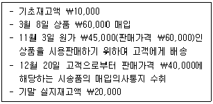
- ￦20,000
- ￦29,500
- ￦35,000
- ￦39,500
- ￦45,500
(정답률: 알수없음)
26. (주)대한은 내용연수가 종료되면 원상복구를 해야하는 구축물을 20×1년 1월 1일에 취득하였다. 구축물의 취득원가는 ￦4,000,000이고, 감가상각은 정액법(내용연수는 5년, 잔존가치는 ￦200,000)을 사용하기로 하였다. 복구원가와 관련된 예상현금흐름의 현재가치는 ￦376,000(할인율 8%)으로 추정되었다. 복구공사시점인 20×6년 1월 1일에 실제복구비가 ￦600,000 소요된 경우 복구공사손실은? (단, 계산금액은 소수점 첫째자리에서 반올림한다. 기간말 단일금액의 미래가치계수(5기간, 8%)는 1.4693이다.)
- ￦30,080
- ￦47,543
- ￦150,400
- ￦224,000
- ￦552,456
(정답률: 알수없음)
27. (주)서울은 20×1년 1월 1일 유형자산을 ￦600,000에 취득하여 원가모형을 적용하였다. 동 자산의 내용연수는 10년이고, 잔존가치는 없으며 정액법으로 감가상각하였다. 20×2년 12월 31일 동 자산의 회수가능액은 ￦400,000이고, (주)서울은 이에 대한 손상차손을 인식하였다. 20×4년 12월 31일 동 자산의 회수가능액이 ￦470,000으로 회복된 경우 20×4년에 (주)서울이 계상하여야 할 손상차손환입액은?
- ￦0
- ￦20,000
- ￦60,000
- ￦70,000
- ￦80,000
(정답률: 알수없음)
28. (주)강북은 20×1년 1월 1일 건물(매입가격 ￦10,000,000, 매입부대비용 ￦150,000)을 취득하는 과정에서 공채(액면금액 ￦100,000, 이자율 7%, 만기 3년, 매년말 이자지급 조건)를 불가피하게 액면금액에 인수하였다. 공채 취득시점의 (주)강북에 적용될 시장이자율은 10%였고, 건물대금과 공채대금은 모두 현금으로 지급하였다. 취득한 공채는 만기보유금융자산으로 분류되었고, 건물은 정액법으로 감가상각(내용연수 5년, 잔존가치 없음)한다. 이의 회계처리에 관한 설명으로 옳은 것은? (단, 계산금액은 소수점 첫째자리에서 반올림한다. 기간말 단일금액의 현가계수(3기간, 10%)는 0.7513, 정상연금의 현가계수(3기간, 10%)는 2.4868이다.)
- 20×1년 12월 31일 인식할 건물의 감가상각비는 ￦2,030,000이다.
- 20×1년 1월 1일 만기보유금융자산의 장부금액은 ￦93,500이다.
- 20×1년 12월 31일 인식될 이자수익은 ￦7,000이다.
- 20×1년 1월 1일 건물의 취득원가는 ￦10,157,462이다.
- 20×1년 12월 31일 만기보유금융자산의 장부금액은 ￦95,000이다.
(정답률: 알수없음)
29. (주)서울은 20×1년 초에 토지를 ￦10,000에 취득하여 사용하기 시작하였다. 20×1년 말과 20×2년 말 현재 동 토지의 공정가치는 각각 ￦11,000과 ￦9,500이다. (주)서울은 매기간 말에 토지를 공정가치로 평가하는 재평가모형을 적용한다. (주)서울의 토지의 회계처리에 관한 설명으로 옳지 않은 것은?
- 토지재평가가 20×1년과 20×2년 당기손익에 미치는 영향은 없다.
- 20×1년 말과 20×2년 말 재평가잉여금의 잔액은 각각 ￦1,000과 ￦0이다.
- 만약 (주)서울이 20×2년 초에 동 토지를 모두 처분하였다면, 20×1년 말에 인식한 재평가잉여금은 당기손익으로 재분류할 수 없다.
- 만약 (주)서울이 20×3년 초에 동 토지를 ￦9,600에 처분하였다면, (주)서울은 처분이익 ￦100을 당기손익으로 인식한다.
- (주)서울의 20×2년 당기손익으로 보고할 토지재평가손실은 ￦500이다.
(정답률: 알수없음)
30. (주)서울은 (주)감평과 협의하여 사용하던 기계장치(취득원가 ￦8,000,000, 감가상각누계액 ￦3,000,000, 공정가치 ￦4,500,000)를 제공하는 조건으로 차량운반구를 취득하였다. 차량운반구의 판매가격은 ￦8,000,000이며, (주)감평은 이 기계장치의 가치를 ￦5,000,000으로 인정하기로 하였으며, (주)서울은 차액 ￦3,000,000을 현금으로 지급하였다. 이 교환거래는 상업적 실질이 있고, 공정가치는 합리적으로 측정한 금액이다. 차량운반구의 취득원가는?
- ￦7,000,000
- ￦7,500,000
- ￦8,000,000
- ￦8,500,000
- ￦9,000,000
(정답률: 알수없음)
31. 제조부문 A, B와 보조부문 X, Y의 서비스 제공관계는 다음과 같다.
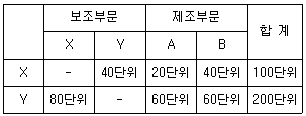
X, Y부문의 원가는 각각 ￦160,000, ￦200,000이다. 단계배부법에 의해 X부문을 먼저 배부하는 경우와 Y부문을 먼저 배부하는 경우의 제조부문 A에 배부되는 총보조부문원가의 차이는?
- ￦24,000
- ￦25,000
- ￦26,000
- ￦27,000
- ￦28,000
(정답률: 알수없음)
32. 다음은 제품A의 판매가격과 원가구조에 대한 자료이다.
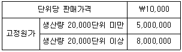
제품A의 공헌이익률이 10%이고 법인세율이 20%일 때 세후순이익 ￦2,000,000을 달성하기 위한 판매량은?
- 7,000단위
- 7,500단위
- 9,000단위
- 10,000단위
- 10,500단위
(정답률: 알수없음)
33. (주)한국은 단일제품을 대량으로 생산하고 있다. 직접재료는 공정 초기에 모두 투입되고 가공원가는 공정 중에 균등하게 발생한다. 생산 중에는 공손이 발생하는 데 품질검사를 통과한 수량의 10%에 해당하는 공손수량은 정상공손으로 간주한다. 공손여부는 공정의 50% 완성시의 검사시점에서 파악된다. 다음 자료를 이용하여 계산한 비정상공손수량은? (단, 물량흐름은 선입선출법을 가정한다.)
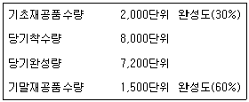
- 380단위
- 430단위
- 450단위
- 520단위
- 540단위
(정답률: 알수없음)
34. 다음은 개별원가계산제도를 이용하고 있는 (주)한국의 원가계산 자료이다. 제조간접원가는 기본원가(prime costs)를 기준으로 배부한다.
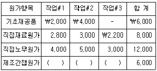
작업#1과 작업#3는 완성되었고, 작업#2는 미완성되었다. (주)한국이 기말재공품으로 계상할 금액은?
- ￦9,600
- ￦10,200
- ￦12,500
- ￦13,600
- ￦14,400
(정답률: 알수없음)
35. (주)한국은 제품A와 제품B를 거래처에 납품하는 업체이다. 제품은 생산과 동시에 전량 납품된다. (주)한국은 합리적인 가격설정목적으로 주요활동을 분석하여 다음과 같은 자료를 수집하였다.
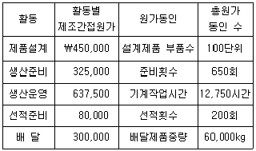
제품A의 생산량은 1,000단위이고, 제품A의 원가동인이 설계제품 부품수 70단위, 준비횟수 286회, 기계작업시간 3,060시간, 선적횟수 100회, 배달제품중량 21,000kg일 경우 활동기준원가계산방법을 적용하여 계산한 제품A의 단위당 제조간접원가는?
- ￦525
- ￦620
- ￦682
- ￦756
- ￦810
(정답률: 알수없음)
36. (주)한국은 한 종류의 수출용 스웨터를 제조한다. 3년간에 걸친 이 제품과 관련된 원가와 영업상황 의 자료는 다음과 같다.
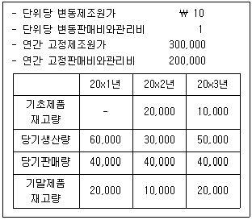
3년간 판매가격의 변동과 원가구조의 변동이 없다는 가정하에서 20×1년 변동원가계산하의 영업이익이 ￦500,000일 경우 20×3년 전부원가계산하의 영업이익은? (단, 원가흐름은 선입선출법을 가정하고, 재공품은 없다.)
- ￦460,000
- ￦480,000
- ￦500,000
- ￦520,000
- ￦540,000
(정답률: 알수없음)
37. 화장품을 제조하는 (주)한국의 20×1년 직접재료예산과 관련된 자료를 이용하여 계산한 3분기의 재료구입 예산액은?
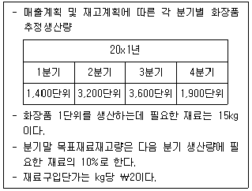
- ￦102,900
- ￦103,200
- ￦104,100
- ￦1⑤,300
- ￦106,400
(정답률: 알수없음)
38. (주)서울은 완제품 생산에 필요한 부품을 자가제조하고 있다. 부품 10,000단위를 제조하는데 소요되는 연간제조원가는 다음과 같다.
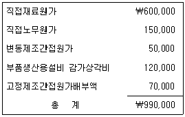
(주)서울은 (주)공덕으로부터 단위당 ￦85에 10,000단위의 부품을 공급하겠다는 제의를 받았다. 이 제의를 수락하더라도 부품생산용설비 감가상각비와 고정제조간접원가는 계속 발생한다. (주)서울이 이 제의를 수락할 경우에는 연간 ￦70,000에 설비를 임대할 수 있다. (주)서울이 이 제의를 수락하는 경우 (주)서울의 이익에 미치는 영향은?
- ￦10,000 증가
- ￦20,000 증가
- ￦20,000 감소
- ￦50,000 감소
- ￦50,000 증가
(정답률: 알수없음)
39. (주)한국은 제품 20,000단위를 판매하고 있다. 제품단위당 판매가격은 ￦600, 단위당 변동제조원가는 ￦280, 단위당 변동판매비와관리비는 ￦170이다. (주)한국은 (주)구포로부터 단위당 ￦500에 7,000단위의 특별주문을 받았다. 이때 소요되는 추가 판매비와관리비는 총 ￦1,200,000이다. 회사의 최대생산능력은 25,000단위이므로 이 특별주문을 받아들일 경우 기존 판매제품의 수량이 2,000단위 감소할 것이다. 이 특별주문을 수락하는 경우 이익에 미치는 영향은?
- ￦40,000 증가
- ￦206,000 증가
- ￦240,000 감소
- ￦340,000 증가
- ￦340,000 감소
(정답률: 알수없음)
40. 표준원가시스템을 사용하고 있는 (주)한국의 직접재료원가의 제품단위당 표준사용량은 10kg이고, 표준가격은 kg당 ￦6이다. (주)한국은 6월에 직접재료 40,000kg을 ￦225,000에 구입하여 36,000kg을 사용하였다. (주)한국의 6월 중 제품생산량은 3,000단위이다. 직접재료 가격차이를 구입시점에 분리하는 경우, 6월의 직접재료원가에 대한 가격차이와 능률차이(수량차이)는?
- 가격차이 ￦ 6,000불리, 능률차이 ￦32,000유리
- 가격차이 ￦ 9,000불리, 능률차이 ￦36,000불리
- 가격차이 ￦15,000유리, 능률차이 ￦36,000불리
- 가격차이 ￦15,000유리, 능률차이 ￦32,000불리
- 가격차이 ￦ 9,000불리, 능률차이 ￦36,000유리
(정답률: 알수없음)
2과목: 회계학
41. 국토의 계획 및 이용에 관한 법령상 광역도시계획 및 도시기본계획에 관한 설명으로 옳지 않은 것은?
- 국토해양부장관은 광역도시계획을 수립하려면 미리 공청회를 열어 주민과 관계 전문가 등으로부터 의견을 들어야 하며, 공청회에서 제시된 의견이 타당하다고 인정하면 광역도시계획에 반영하여야 한다.
- 광역계획권이 같은 도의 관할 구역에 속하여 있는 경우 시장 또는 군수가 협의를 거쳐 요청하면 도지사가 단독으로 광역도시계획을 수립할 수 있다.
- 도시기본계획의 수립권자는 특별시장ㆍ광역시장ㆍ시장 또는 군수이며, 도시기본계획의 수립기준은 승인권자인 시ㆍ도지사가 정한다.
- 도지사는 시장 또는 군수가 수립한 도시기본계획을 승인하려면 관계 행정기관의 장과 협의한 후 지방도시계획위원회의 심의를 거쳐야 한다.
- 특별시장ㆍ광역시장ㆍ시장 또는 군수는 5년마다 관할 구역의 도시기본계획에 대하여 그 타당성 여부를 전반적으로 재검토하여 정비하여야 한다.
(정답률: 알수없음)
42. 국토의 계획 및 이용에 관한 법령상 개발행위허가의 절차 등에 관한 설명으로 옳지 않은 것은?
- 도시계획사업에 의한 개발행위는 허가를 받을 필요가 없다.
- 허가권자가 개발행위허가에 조건을 붙이려는 때에는 미리 신청한 자의 의견을 들어야 한다.
- 허가권자는 개발행위허가의 신청에 대하여 특별한 사유가 없으면 15일(심의 또는 협의기간은 제외)이내에 처분을 하여야 한다.
- 허가권자가 처분을 할 때에는 허가증을 발급하거나 불허가처분의 사유를 서면으로 신청인에게 알려야 한다.
- 개발밀도관리구역 안에서 개발행위허가 신청을 할 때에는 기반시설의 설치나 그에 필요한 용지의 확보에 관한 계획서를 제출하여야 한다.
(정답률: 알수없음)
43. 국토의 계획 및 이용에 관한 법령상 용도지역에 관한 설명이다. ( )에 들어갈 용어가 옳게 연결된 것은?
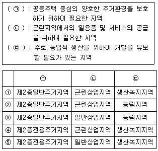
- ①
- ②
- ③
- ④
- ⑤
(정답률: 알수없음)
44. 국토의 계획 및 이용에 관한 법령상 기반시설과 그 종류의 연결이 옳은 것은?
- 교통시설 : 도로, 궤도, 폐차장
- 공간시설 : 공원, 유원지, 운동장
- 유통ㆍ공급시설 : 수도, 공동구, 하수도
- 보건위생시설 : 장례식장, 도축장, 종합의료시설
- 방재시설 : 하천, 수질오염방지시설, 저수지
(정답률: 알수없음)
45. 국토의 계획 및 이용에 관한 법령상 도시관리계획의 내용에 해당하지 않는 것은?
- 수산자원보호구역의 변경에 관한 계획
- 기반시설의 개량에 관한 계획
- 도시개발사업이나 정비사업에 관한 계획
- 지구단위계획구역의 변경에 관한 계획
- 자연보전권역의 변경에 관한 계획
(정답률: 알수없음)
46. 국토의 계획 및 이용에 관한 법령상 지구단위계획의 내용에 해당하지 않는 것은?
- 정비구역에서 용도지역을 일반주거지역에서 일반상업지역으로 변경하는 내용
- 경관지구를 자연경관지구와 시가지경관지구로 세분하는 내용
- 당해 지구단위계획구역의 지정목적 달성을 위하여 필요한 주차장의 배치와 규모
- 건축물의 용도제한
- 건축물의 색채
(정답률: 알수없음)
47. 국토의 계획 및 이용에 관한 법령상 용도지구에 관한 설명으로 옳은 것은?
- 용도지구란 토지의 이용 및 건축물의 용도 등에 대한 용도구역의 제한을 완화하여 적용함으로써 용도구역의 기능을 증진시키기 위하여 도시기본계획으로 결정하는 지역을 말한다.
- 복합개발진흥지구는 주거기능, 공업기능, 유통ㆍ물류기능 및 관광ㆍ휴양기능 외의 기능을 중심으로 특정한 목적을 위하여 개발ㆍ정비할 필요가 있는 지구를 말한다.
- 집단취락지구는 녹지지역ㆍ관리지역ㆍ농림지역 또는 자연환경보전지역 안의 취락을 정비하기 위하여 필요한 지구를 말한다.
- 시ㆍ도지사는 지역여건상 필요하면 법에서 정하고 있는 용도지역 또는 용도구역의 행위제한을 완화하는 용도지구를 신설하여 도시관리계획으로 결정할 수 있다.
- 일반미관지구는 중심지미관지구 및 역사문화미관지구 외의 지역으로서 미관을 유지ㆍ관리하기 위하여 필요한 지구를 말한다.
(정답률: 알수없음)
48. 국토의 계획 및 이용에 관한 법령상 허가구역 안에 있는 토지에 대하여 토지거래계약의 허가를 요하지 아니하는 토지의 면적기준으로 옳은 것은? (단, 국토해양부장관이 따로 정하여 공고하는 경우는 고려하지 않음)
- 주거지역 : 200 m2 이하
- 상업지역 : 220 m2 이하
- 공업지역 : 680 m2 이하
- 녹지지역 : 120 m2 이하
- 도시지역 안에서 용도지역의 지정이 없는 구역 : 90 m2 이하
(정답률: 알수없음)
49. 국토의 계획 및 이용에 관한 법령상 개발행위허가에 관한 설명으로 옳은 것은?
- 개발행위허가를 할 때에 시장 또는 군수가「광업법」에 따른 채굴계획의 인가에 관하여 미리 관계 행정기관의 장과 협의한 사항에 대하여는 그 인가를 받은 것으로 본다.
- 시장 또는 군수는 지구단위계획구역으로 지정된 지역에 대하여는 3년 이내의 기간 동안 개발행위허가를 제한할 수 있으며, 개발행위허가의 제한은 그 기간을 연장할 수 없다.
- 해당 지방자치단체의 조례로 정하는 공공단체가 시행하는 개발행위에 대하여 시장 또는 군수는 이행보증금을 예치하게 할 수 있다.
- 지구단위계획을 수립한 지역에서 행하는 개발행위를 허가하려면 지방도시계획위원회의 심의를 거쳐야 한다.
- 개발행위허가를 받은 행정청이 새로 공공시설을 설치한 경우 새로 설치된 공공시설은 그 시설을 관리할 관리청에 유상으로 귀속된다.
(정답률: 알수없음)
50. 국토의 계획 및 이용에 관한 법령상 토지거래허가에 관한 설명으로 옳지 않은 것은?
- 허가신청 면적이 그 토지의 이용목적으로 보아 적합하지 않다고 인정되는 경우에는 허가를 받을 수 없다.
- 기존의 농업인이 아닌 자가 농업용 토지를 취득하고자 하는 경우 그가 거주하는 시ㆍ군에 소재하는 토지와 거주지로부터 20 km 이내에 소재하는 토지에 한해서 허가를 받을 수 있다.
- 토지거래계약을 체결하려는 자의 토지이용목적이 도시계획에 맞지 아니한 경우에는 허가를 받을 수 없다.
- 법률에 따라 토지를 수용할 수 있는 사업을 시행하는 자가 그 사업을 시행하기 위하여 필요한 것인 경우 허가를 받을 수 있다.
- 허가구역을 포함한 지역의 주민을 위한 편익시설로서 관할 시장ㆍ군수 또는 구청장이 확인한 시설의 설치에 이용하려는 경우 허가를 받을 수 있다.
(정답률: 알수없음)
51. 국토의 계획 및 이용에 관한 법령상 토지거래허가구역에 관한 설명으로 옳은 것은?
- 허가구역의 지정권자는 국토해양부장관이지만 특별히 투기가 성행할 우려가 있을 경우에는 관계중앙행정기관의 장도 지정할 수 있다.
- 국토해양부장관이 허가구역을 지정하려면 중앙도 시계획위원회의 심의를 거쳐야 한다.
- 허가구역을 처음으로 지정하고자 할 때에는 미리 시ㆍ도지사 및 시장ㆍ군수 또는 구청장의 의견을 들어야 한다.
- 허가구역의 지정은 허가구역의 지정을 공고한 날부터 그 효력이 발생한다.
- 허가구역의 지정에 대해서는 15일 이상 그 사실을 공고하고 공고내용을 15일 이상 일반이 열람할 수 있도록 하여야 한다.
(정답률: 알수없음)
52. 국토의 계획 및 이용에 관한 법령상 기반시설설치 비용에 관한 설명으로 옳은 것은?
- 특별시장ㆍ광역시장ㆍ시장 또는 군수는 기반시설 설치비용을 부과하려면 부과기준시점부터 30일 이내에 납부의무자에게 적용되는 부과기준 및 부과될 기반시설설치비용을 미리 알려야 한다.
- 기존 건축물을 철거하고 신축하는 경우 기존 건축물의 연면적은 고려하지 않고 신축하는 건축물의 연면적만을 고려하여 기반시설설치비용을 부과한다.
- 납부의무자는 건축허가를 받은 날부터 2개월 이내에 기반시설설치비용을 납부하여야 한다.
- 기반시설설치비용 중 기반시설을 설치하는 데 필요한 기반시설 표준시설비용에는 해당 구역의 평균 개별공시지가가 반영된다.
- 납부한 기반시설설치비용은 해당 기반시설부담구역에 필요한 기반시설 및 용지를 모두 확보한 후 잔액이 생기면 납부의무자에게 환급된다.
(정답률: 알수없음)
53. 국토의 계획 및 이용에 관한 법령상 행정청인 도시계획시설사업의 시행자가 사업시행과 관련하여 타인의 토지를 출입하는 경우 등에 관한 설명으로 옳지 않은 것은?
- 타인의 토지에 출입하려면 출입하려는 날의 3일 전까지 그 토지의 소유자ㆍ점유자 또는 관리인에게 그 일시와 장소를 알려야 한다.
- 타인의 토지를 임시통로로 일시사용하려면 그 토지의 소유자ㆍ점유자 또는 관리인의 동의를 받아야 한다.
- 타인의 토지를 재료적치장으로 일시사용하고자 할 때, 그 토지의 소유자ㆍ점유자 또는 관리인의 주소가 불분명하여 동의를 받을 수 없는 경우에는 미리 관할 시장 또는 군수의 허가를 받아야 한다.
- 장애물을 제거하려면 제거하려는 날의 3일 전까지 장애물의 소유자ㆍ점유자 또는 관리인에게 알려야 한다.
- 일출 전이나 일몰 후에는 그 토지 점유자의 승낙없이 택지나 담장 또는 울타리로 둘러싸인 타인의 토지에 출입할 수 없다.
(정답률: 알수없음)
54. 국토의 계획 및 이용에 관한 법령상 지형도면에 관한 설명으로 옳은 것은?
- 지형도면은 도시관리계획에 대한 주민의견청취 이전에 작성ㆍ제공되어야 한다.
- 지적이 표시된 지형도의 데이터베이스가 구축되어 있는 경우에도 이를 사용하여 지형도면을 작성할 수 없다.
- 도시관리계획 결정의 효력은 원칙적으로 지형도면에 대한 도지사의 승인ㆍ고시로 발생한다.
- 도시지역 외의 지역으로서 해당 토지에 도시계획시설이 결정되지 아니한 경우에는 지적이 표시되지 아니한 축척 5천분의 1 이상의 지형도에 도시관리계획사항을 명시한 도면을 작성할 수 있다.
- 주거지역에서 축척 3천분의 1 이상의 지형도를 사용하여 도시관리계획결정을 고시한 경우에는 지형도면을 따로 작성하지 않을 수 있다.
(정답률: 알수없음)
55. 국토의 계획 및 이용에 관한 법령상 도시계획 등에 관한 설명으로 옳은 것은?
- 도시계획은 광역도시계획과 도시기본계획으로 구분한다.
- 개발제한구역, 시가화조정구역의 지정 또는 변경에 관한 계획은 도시기본계획으로 결정한다.
- 도시관리계획을 시행하기 위한 정비사업은 도시계획시설사업에 포함된다.
- 도시계획시설은 기반시설 중 도시기본계획으로 결정된 시설을 말한다.
- 자동차 및 건설기계검사시설과 그 시설의 기능발휘와 이용을 위하여 필요한 부대시설 및 편익시설은 기반시설에 해당한다.
(정답률: 알수없음)
56. 국토의 계획 및 이용에 관한 법령상 용도지역에 관한 설명으로 옳지 않은 것은?
- 도시지역, 관리지역, 농림지역 또는 자연환경보전지역으로 용도가 지정되지 아니한 지역에서 용도지역에서의 행위제한 등에 대하여는 자연환경보전지역에 관한 규정을 적용한다.
- 용도지역이 미세분된 도시지역에서의 행위제한 등에 대하여는 보전녹지지역에 관한 규정을 적용한다.
- 관리지역에서「농지법」에 따른 농업진흥지역으로 지정ㆍ고시된 지역은 생산관리지역으로 결정ㆍ고시된 것으로 본다.
- 용도지역이 미세분된 관리지역에서의 행위제한 등에 대하여는 보전관리지역에 관한 규정을 적용한다.
- 바다인 공유수면의 매립목적이 그 매립구역과 이웃하고 있는 용도지역의 내용과 같으면, 도시관리계획의 입안 및 결정절차 없이 그 매립준공구역은 그 매립의 준공인가일부터 이와 이웃하고 있는 용도지역으로 지정된 것으로 본다.
(정답률: 알수없음)
57. 부동산 가격공시 및 감정평가에 관한 법률의 목적과 관련하여 ( )의 용어에 관한 설명으로 옳지 않은 것은?
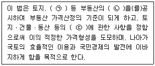
- ㉠에 포함되는 공동주택은 아파트, 연립주택, 다세대주택, 다가구주택으로 구분된다.
- ㉡은 통상적인 시장에서 정상적인 거래가 이루어지는 경우 성립될 가능성이 가장 높다고 인정되는 가격을 말한다.
- 표준지의 ㉡을 평가함에 있어 건물 그 밖의 정착물이 있는 때에는 당해 정착물이 존재하지 아니하는 것으로 보고 평가하여야 한다.
- 국토해양부장관이 표준지의 ㉡을 조사ㆍ평가하고자 할 때에는 둘 이상의 감정평가업자에게 이를 의뢰하여야 한다.
- ㉢은 토지등의 경제적 가치를 판정하여 그 결과를 가액으로 표시하는 것을 말한다.
(정답률: 알수없음)
58. 부동산 가격공시 및 감정평가에 관한 법령상 감정평가사의 징계사유에 해당하지 않는 것은?
- 자기의 소유토지를 감정평가한 경우
- 국토해양부 소속 공무원의 장부검사를 기피한 경우
- 구비서류를 거짓으로 작성하는 방법으로 갱신등록을 한 경우
- 업무가 정지된 자가 등록증을 국토해양부장관에게 반납하지 않은 경우
- 유가증권의 매매업을 직접 영위하는 경우
(정답률: 알수없음)
59. 부동산 가격공시 및 감정평가에 관한 법령상 감정평가업자 또는 감정평가사에 관한 설명으로 옳지 않은 것은?
- 국토해양부장관은 감정평가사의 자격등록취소처분을 하고자 하는 경우 청문을 실시하여야 한다.
- 감정평가업자는 감정평가서의 원본을 교부일로부터 10년 이상 보존하여야 한다.
- 파산선고를 받고 복권된 자는 감정평가법인의 대표이사가 될 수 있다.
- 감정평가업자는 의뢰인에 대한 손해배상책임을 보장하기 위하여 보증보험이나 공제사업에 가입하고, 이를 국토해양부장관에게 통보하여야 한다.
- 부정한 방법으로 감정평가사의 자격을 얻었음을 이유로 그 자격이 취소된 후 3년이 경과되지 아니한 자는 감정평가사가 될 수 없다.
(정답률: 알수없음)
60. 부동산 가격공시 및 감정평가에 관한 법령상 표준지공시지가의 공시에 포함되어야 하는 사항만을 모두 고른 것은?
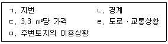
- ㄱ, ㄴ, ㄷ
- ㄱ, ㄷ, ㄹ
- ㄱ, ㄹ, ㅁ
- ㄱ, ㄴ, ㄹ, ㅁ
- ㄴ, ㄷ, ㄹ, ㅁ
(정답률: 알수없음)
61. 부동산 가격공시 및 감정평가에 관한 법령상 주택가격의 공시에 관한 설명으로 옳은 것은?
- 표준주택가격은 국토해양부장관이 중앙부동산평가위원회의 심의를 거쳐 조사ㆍ평가한 후 공시하여야 한다.
- 신축된 단독주택에 대하여 개별주택가격을 결정ㆍ공시할 경우에는 당해 연도의 공시기준일을 기준으로 한다.
- 165 m2 미만인 연립주택의 공동주택가격은 국세청장이 결정ㆍ고시하여야 한다.
- 표준주택가격은 국가ㆍ지방자치단체 등의 기관이 그 업무와 관련하여 개별주택가격을 산정하는 경우에 그 기준이 된다.
- 개별주택 및 공동주택의 가격은 국가ㆍ지방자치단체 등의 기관이 수용방식의 도시계획사업을 시행할 때 보상가격으로 사용된다.
(정답률: 알수없음)
62. 부동산 가격공시 및 감정평가에 관한 법령상 개별공시지가의 결정ㆍ공시에 관한 설명으로 옳지 않은 것은? (공시기준일은 1월 1일로 함)
- 개별공시지가를 결정ㆍ공시하지 아니한 표준지에 대하여는 당해 토지의 공시지가를 개별공시지가로 본다.
- 시장ㆍ군수 또는 구청장은 조세의 부과대상이 아닌 토지에 대해서는 개별공시지가를 결정ㆍ공시하지 아니할 수 있다.
- 2011년 11월 15일 분할ㆍ합병된 토지에 대해서는 2012년 5월 31일까지 개별공시지가를 결정ㆍ공시하여야 한다.
- 2012년 5월 15일 토지의 형질변경으로 지목이 변경된 토지에 대해서는 2012년 7월 1일을 기준일로 하여 개별공시지가를 결정ㆍ공시하여야 한다.
- 시장ㆍ군수 또는 구청장이 개별공시지가를 결정ㆍ공시하기 위하여 개별토지의 가격을 산정한 때에는 토지소유자 등의 의견을 들어야 하나, 미리 관계 중앙행정기관의 장과 협의한 경우에는 의견청취를 생략할 수 있다.
(정답률: 알수없음)
63. 부동산 가격공시 및 감정평가에 관한 법령상 표준지공시지가에 관한 설명으로 옳은 것은?
- 국토해양부장관은 표준지에 토지의 사용ㆍ수익을 제한하는 권리가 설정되어 있는 때에는 당해 권리를 포함하여 적정가격을 평가하여야 한다.
- 국가가 국유토지를 처분하기 위하여 토지의 가격을 산정하는 경우에 유사한 이용가치를 지닌 표준지공시지가를 적용할 수 없다.
- 표준지공시지가에 대하여 이의가 있는 자는 서면으로 시장ㆍ군수 또는 구청장을 거쳐 국토해양부장관에게 이의를 신청하여야 한다.
- 국토해양부장관은 표준지공시지가에 대한 이의신청을 받은 날로부터 30일 이내에 이의신청을 심사하여, 그 결과를 신청인에게 서면으로 통지하여야 한다.
- 표준지의 적정가격 조사ㆍ평가를 의뢰받은 감정평가업자가 표준지조사평가보고서를 제출하고자 하는 때에는 미리 당해 표준지를 관할하는 시장ㆍ군수 또는 구청장의 의견을 들어야 한다.
(정답률: 알수없음)
64. 국토해양부장관은 성실의무 등의 위반을 이유로 A감정평가법인에 대한 업무정지 6개월의 처분에 갈음하여 과징금을 부과하고자 한다. 이 경우 부동산가격공시 및 감정평가에 관한 법령상 국토해양부장관이 위반행위와 관련한 제반 사정을 종합적으로 고려하여 부과할 수 있는 과징금의 최저액수는?
- 5천만 원
- 1억 원
- 1억 2천 5백만 원
- 1억 7천 5백만 원
- 2억 5천만 원
(정답률: 알수없음)
65. 국유재산법령상 국유재산에 관한 설명으로 옳지 않은 것은?
- 중앙관서의 장이 국유재산의 관리에 관련된 법령을 개정하려면 그 내용에 관하여 총괄청 및 감사원과 협의하여야 한다.
- 총괄청이나 중앙관서의 장은 소유자 없는 부동산을 국유재산으로 취득한다.
- 확정판결에 의한 경우에는 일반재산에 대하여 사권을 설정할 수 있다.
- 위법한 재산관리로 사용승인이 철회되어 총괄청에 인계된 행정재산도 그 용도가 폐지되는 것은 아니다.
- 총괄청은 일반재산을 보존용재산으로 전환하여 관리할 수 있다.
(정답률: 알수없음)
66. 국유재산법령상 국유재산의 종류와 범위 등에 관한 설명으로 옳지 않은 것은?
- 정부기업이 직원의 주거용으로 사용하는 국유재산은 일반재산이다.
- 국유재산을 관리ㆍ처분할 경우에는 취득과 처분이 균형을 이루어야 한다.
- 디자인권은 국유재산의 범위에 포함된다.
- 국유재산은 행정재산과 일반재산으로 구분되며, 행정재산은 공용재산, 공공용재산, 기업용재산, 보존용재산으로 분류된다.
- 정부기업이 사용하던 궤도차량이 정부기업의 폐지와 함께 포괄적으로 용도폐지된 경우에도 국유재산에 해당한다.
(정답률: 알수없음)
67. 국유재산법령상 일반재산에 관한 설명으로 옳은 것은?
- 일반재산을 개발하는 경우에 공공의 편익성이나 지역발전의 기여도 등은 고려해야 하지만 재정수입의 증대는 고려요소가 아니다.
- 용도를 지정하여 매각하는 일반재산은 그 재산의 매각일로부터 10년 이상 지정된 용도로 활용하여야 한다.
- 일반재산은 부동산신탁을 취급하는 신탁업자에게 신탁하여 개발하게 해서는 안 된다.
- 증권이 아닌 일반재산을 공공기관에 처분하는 경우에 예정가격은 두 개의 감정평가법인의 평가액을 산술평균한 금액으로 결정한다.
- 중앙관서의 장이 국가 외의 자가 소유하는 토지에 있는 국가소유의 건물을 그 토지 소유자에게 양여하는 경우에는 총괄청과 협의 없이 양여할 수 있다.
(정답률: 알수없음)
68. 국유재산법령상 행정재산의 사용허가 등에 관한 설명으로 옳은 것은?(문제 오류로 가답안 발표시 1번으로 발표되었지만 확정답안 발표시 모두 정답처리 되었습니다. 여기서는 가답안인 1번을 누르면 정답 처리 됩니다.)
- 공유(公有) 또는 사유재산과 교환하여 그 교환받은 재산을 행정재산으로 관리하려는 경우에는 행정재산도 교환하거나 양여할 수 있다.
- 행정재산의 사용허가에 관하여는「국가를 당사자로 하는 계약에 관한 법률」의 규정이 준용되지 않는다.
- 행정재산을 주거용으로 사용허가할 수 있지만, 수의의 방법으로 할 수는 없다.
- 5년을 초과하지 아니하는 범위에서 행정재산의 사용허가를 갱신할 수 있지만, 수의의 방법으로 사용허가를 받은 재산에 대하여는 1회에 한하여 갱신할 수 있다.
- 중앙관서의 장이 행정재산을 직접 공용으로 사용하려는 지방자치단체에게 사용허가하는 경우에는 사용료를 면제하여야 한다.
(정답률: 알수없음)
69. 건축법령상 용어의 정의로서 옳지 않은 것은?
- “고층건축물”이란 층수가 30층 이상이거나 높이가 100m 이상인 건축물을 말한다.
- “지하층”이란 건축물의 바닥이 지표면 아래에 있는 층으로서 바닥에서 지표면까지 평균높이가 해당 층 높이의 2분의 1 이상인 것을 말한다.
- “리모델링”이란 건축물의 노후화를 억제하거나 기능 향상 등을 위하여 대수선하거나 일부 증축하는 행위를 말한다.
- “건축물의 용도”란 건축물의 종류를 유사한 구조, 이용 목적 및 형태별로 묶어 분류한 것을 말한다.
- “건축주”란 건축물의 건축ㆍ대수선ㆍ용도변경, 건축설비의 설치 또는 공작물의 축조에 관한 공사를 발주하거나 현장 관리인을 두어 스스로 그 공사를 하는 자를 말한다.
(정답률: 알수없음)
70. 건축법령상 건축허가 및 신고에 관한 설명으로 옳지 않은 것은?
- 허가권자는 주변의 교육환경을 고려할 때 부적합하다고 인정되는 숙박시설에 대해서는 건축위원회의 심의를 거쳐 건축허가를 거부할 수 있다.
- 허가권자는 공사에 착수하였으나 공사의 완료가 불가능하다고 인정되는 경우 건축허가를 취소할 수 있다.
- 연면적 200 m2 미만이고 3층 미만인 건축물의 대수선은 건축신고 사항이다.
- 건축신고일부터 1년 이내에 공사에 착수하지 아니하면 그 신고의 효력은 없어진다.
- 국토해양부장관은 국토관리를 위하여 특히 필요하다고 인정할 경우 건축허가를 받은 건축물의 착공을 제한할 수 있다.
(정답률: 알수없음)
71. 건축법령상 건축물의 구조 및 재료에 관한 설명으로 옳지 않은 것은?
- 건축물은 고정하중, 적재하중, 적설하중 등에 대하여 안전한 구조를 가져야 한다.
- 인접 대지경계선으로부터 직선거리 1.5 m에 이웃주택의 내부가 보이는 창문을 설치하려면 차면시설을 설치하여야 한다.
- 방화지구 안에서 간판, 광고탑을 건축물의 지붕위에 설치하는 경우 그 높이가 3 m 미만인 경우에는 주요부를 불연재료로 하지 않아도 된다.
- 바닥면적의 합계가 3천m2인 공연장을 지하층에 설치하는 경우에는 각 실에 있는 자가 피난층으로 대피할 수 있도록 천장이 개방된 외부 공간을 설치하여야 한다.
- 건축물의 일부가 문화 및 집회시설에 해당하는 경우에는 그 부분과 다른 부분을 방화구획으로 구획하여야 한다.
(정답률: 알수없음)
72. 건축법령상 건축물의 대지와 도로에 관한 설명으로 옳지 않은 것은?
- 대지의 배수에 지장이 없는 경우에는 대지가 인접한 도로면보다 낮아도 된다.
- 녹지지역의 건축물은 면적이 200 m2 이상인 대지에 건축하는 경우에도 조경 등의 조치를 하지 아니할 수 있다.
- 건축물의 대지는 2 m 이상이 자동차전용도로가 아닌 도로에 접하여야 하지만, 해당 건축물의 출입에 지장이 없다고 인정되는 경우에는 그러하지 아니하다.
- 이해관계인이 해외에 거주하여 동의를 받기 곤란한 경우에 허가권자는 건축위원회의 심의를 거쳐 이해관계인의 동의 없이 도로의 위치를 지정ㆍ공고할 수 있다.
- 건축물은 지표의 위ㆍ아래 부분에서 건축선의 수직면을 넘어서는 아니 되며, 도로면으로부터 높이 4.5 m 이하에 있는 창문은 열고 닫을 때 건축선의 수직면을 넘지 않는 구조로 하여야 한다.
(정답률: 알수없음)
73. 측량ㆍ수로조사 및 지적에 관한 법령상 지번의 구성 및 부여에 관한 설명으로 옳은 것은?
- 경계점좌표등록부에는 지번을 등록하지 아니 한다.
- 여러 필지로 되어 있는 토지를 등록전환할 경우에는 그 지번부여지역의 최종 본번의 다음 순번부터 본번으로 하여 순차적으로 지번을 부여할 수 있다.
- 도시개발사업 시행지역의 지번은 그 사업의 준공이전에 부여하여야 한다.
- 지번은 북동에서 남서로 순차적으로 부여한다.
- 지적소관청이 지번부여지역 전부의 지번을 변경할 경우에는 국토해양부장관의 승인을 받고, 일부의 지번을 변경할 경우에는 시ㆍ도지사나 대도시 시장의 승인을 받아야 한다.
(정답률: 알수없음)
74. 측량ㆍ수로조사 및 지적에 관한 법령상 지적측량을 하여야 하는 경우에 해당하지 않는 것은? (단, 측량의 필요성은 인정되고 도시개발사업 등의 시행지역이 아님)
- 지적공부를 복구하는 경우
- 토지를 등록전환하는 경우
- 축척을 변경하는 경우
- 토지를 합병하는 경우
- 경계점을 지상에 복원하는 경우
(정답률: 알수없음)
75. 측량ㆍ수로조사 및 지적에 관한 법령상 지목에 관한 설명으로 옳지 않은 것은?
- 묘지의 관리를 위한 건축물 부지의 지목은 “대”로 한다.
- 과수류를 집단적으로 재배하는 토지에 접속된 주거용 건축물 부지의 지목은 “대”로 한다.
- 「주차장법」에 따른 노상주차장 부지의 지목은 “주차장”으로 한다.
- 제조업을 하고 있는 공장시설물의 부지와 같은 구역에 있는 부속시설물인 의료시설 부지의 지목은 “공장용지”로 한다.
- 자연의 유수가 있을 것으로 예상되는 토지의 지목은 “하천”으로 한다.
(정답률: 알수없음)
76. 측량ㆍ수로조사 및 지적에 관한 법령상 개별공시지가와 그 기준일을 등록한 지적공부로 옳게 짝지어진 것은?
- 지적도과 임야도
- 토지대장과 임야대장
- 토지대장과 대지권등록부
- 임야대장과 공유지연명부
- 지적도와 경계점좌표등록부
(정답률: 알수없음)
77. 부동산등기법상 등기에 관한 설명으로 옳지 않은 것은?
- 등기는 법률에 다른 규정이 없는 경우에는 등기권리자와 등기의무자가 공동으로 신청한다.
- 부동산표시의 변경등기는 소유권의 등기명의인이 단독으로 신청한다.
- 판결에 의한 등기는 승소한 등기권리자 또는 등기의무자가 단독으로 신청한다.
- 소유권보존등기의 말소등기는 등기명의인이 단독으로 신청한다.
- 등기관이 등기를 마친 경우 그 때부터 등기는 효력을 발생한다.
(정답률: 알수없음)
78. 부동산등기법상 건물의 표시에 관한 등기에 대한 설명으로 옳지 않은 것은?
- 건물이 멸실된 경우 그 건물 소유권의 등기명의인은 그 사실이 있는 때부터 1개월 이내에 멸실등기를 신청하여야 한다.
- 존재하지 아니하는 건물에 대한 등기가 있을 때에는 그 소유권의 등기명의인은 지체 없이 멸실등기를 신청하여야 한다.
- 건물의 합병이 있는 경우에 그 건물 소유권의 등기명의인은 그 사실이 있는 때부터 1개월 이내에 변경등기를 신청하여야 한다.
- 구분건물의 등기기록 중 1동 표제부에 관한 변경등기는 그 구분건물과 같은 1동의 건물에 속하는 다른 구분건물에 대하여는 변경등기로서의 효력이 없다.
- 구분건물로서 그 건물이 속하는 1동 전부가 멸실된 경우에 그 구분건물의 소유권의 등기명의인은 1동의 건물에 속하는 다른 구분건물의 소유권의 등기명의인을 대위하여 1동 전부에 대한 멸실등기를 신청할 수 있다.
(정답률: 알수없음)
79. 부동산등기법상 등기신청의 각하 사유에 해당하지 않는 것은? (단, 신청의 잘못된 부분에 대한 보정은 고려하지 아니함)
- 신청할 권한이 없는 자가 신청한 경우
- 신청정보와 등기원인을 증명하는 정보가 일치하지 아니한 경우
- 등기에 필요한 첨부정보를 제공하지 아니한 경우
- 신청정보의 등기권리자의 표시가 등기기록과 일치하지 아니한 경우
- 신청정보의 등기의 목적인 권리의 표시가 등기기록과 일치하지 아니한 경우
(정답률: 알수없음)
80. 부동산등기법상 신탁등기에 관한 설명으로 옳지 않은 것은?
- 수익자 또는 위탁자는 수탁자를 대위하여 신탁등기를 신청할 수 있다.
- 수탁자가 여러 명인 경우 등기관은 신탁재산이 공유인 뜻을 기록하여야 한다.
- 신탁등기의 신청은 해당 신탁으로 인한 권리의 이전 또는 보존이나 설정등기의 신청과 동시에 하여야 한다.
- 신탁을 원인으로 위탁자가 자기 명의의 재산을 수탁자에게 처분하는 경우 신탁등기의 신청은 위탁자를 등기의무자로 하고 수탁자를 등기권리자로 한다.
- 신탁재산에 속한 권리가 소멸된 경우 신탁등기의 말소신청은 신탁된 권리의 말소등기의 신청과 동시에 하여야 한다.
(정답률: 알수없음)